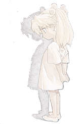
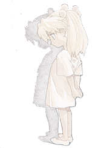

NEON GENESISEVANGELION(Rebirth) BirthdayFeb.6,2015 |

18岁，一个有着无限可能性的年龄；
我曾疑惑自己存在的意义；
我曾一度失去生活的希望；
我质疑，为什么学校会是现在这样？
我嘲笑，愚蠢的人们不会作出改变！
我自救，09.08.2014紧急退学；
我自由，犹如笼中鸟儿重获天空；
我准备飞翔，摇晃着我的双翼，全身绷紧，预备！
等等，我应当如何挥舞我的双翼？

|
我迷茫了； 一瞬间，我忘记了我此举的目的， 不，我只是刚刚清醒过来。 生命失去了书中那神圣的光芒，显得赤裸又叫人恶心， 从前自己说出的梦想，现在听起来那么的刺耳又无力， 那就死去吧，往前一步，便能结束这一切； 但会很痛吧？ 我不敢... 那就面对吧，握紧拳头，勇敢面对这一切。 |

|
现在，让我们来一步一步解决这些该死的问题。 你的梦想是什么？ 事实上，我不知道； 那，你喜欢什么？ ...可能，现在什么都不喜欢吧； 你知道吗？ 什么？ 或许，当时你选择往前一步会是一个正确的选择。 |
 

|
事实上，我现在才发现，我唯一喜欢的就只是做梦而已。 有时候，我梦想自己是Steve Jobs，特立独行，但才华横溢； 但看起来我只是一个有轻微自闭的高中辍学的无业青年。 有时候，我梦想自己是一个Pro，热爱着滑板，并有着无数的赞助； 但看起来我只是一厢情愿。 有时候，我梦想自己是一个伟大的思想家，只是现在人们还没有发现我； 但看起来这只是在为逃避现实找的一个借口。 不久前，我还梦想自己是一个艺术家，虽然我从小到大没有几次绘画经历； 但看起来，我只是去玩了几天Ps而已。 当我发现我竟然没有一个真正的梦想与兴趣时，一个接一个的“梦想”从我脑中冒出： 工程师、艺术家、科学家、作曲家、冒险家、作家、码农、设计师、CEO、Pro...... |
|
不断变化的“梦想”让我有点透不过气来， 这让我觉得我不是一个意志坚定的人。 但我却没有办法去停止这一现状， 可能是小时候就养成的坏毛病吧。 但你知道吗，在做梦的时候，感觉还不错 这也促使我去尝试不同的事物，让我去做一些常人难以想象的事（有时候连我自己也难以想象） 我时常觉得我会成为一个非常伟大的人，但事后却又觉得生活十分的无趣 虽然我一直坚持人类存在自由意志，但我自身却常常像早已决定好要做什么一样， 不受我传统观念的影响 家里早已临近破产，与父亲之间的关系也再次达到冰点， 我时常无意去做一些事情，但当时我却完全没有办法停止这些行为， 事后我也完全找不到这么做的理由 退学如此，与父亲不和亦然。 尽管我将退学这一行为归结为对传统应试教育的鄙视与终身学习这一行为的推崇； 事实上，在当时，我完全可以做得更好，只是我却控制不了自己。 但对于已经发生的事情，去幻想what if是完全没有用的，那就朝着好的方面去想吧。 |
|
我一直在思考因害怕死亡而换得生命的我应当如何对待现在的生活； 是励志地过完一生，还是珍惜每分每秒，亦或是与大多数人一样，或者是其它什么呢？ 我不知道，至少我现在还不知道。 真是奇怪的人生，对吧？ |
|
Pippa Passes The year’s at the spring, And day’s at the morn; Morning’s at seven; The hill-side’s dew-pearled; The lark’s on the wing; The snail’s on the thorn; God’s in His heaven— All’s right with the world! ——Robert Browning |

|
Let us face the damn truely World and Welcome to the age 18. |